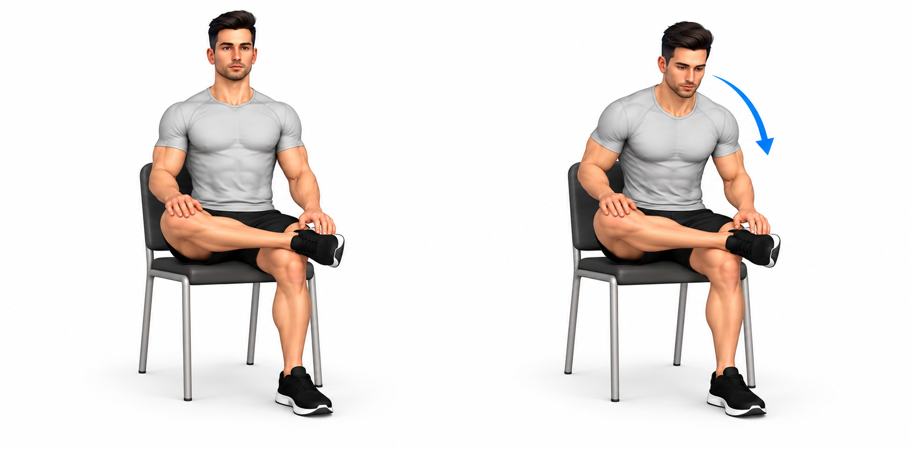
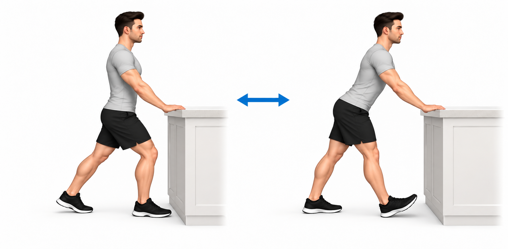
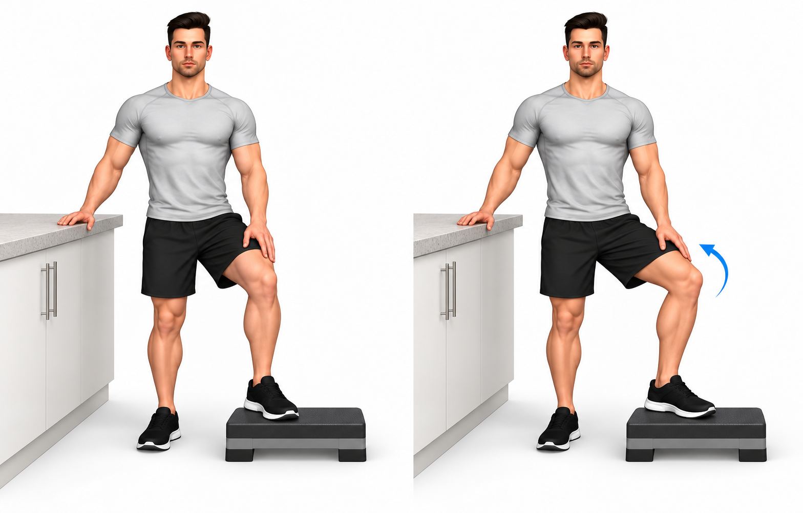
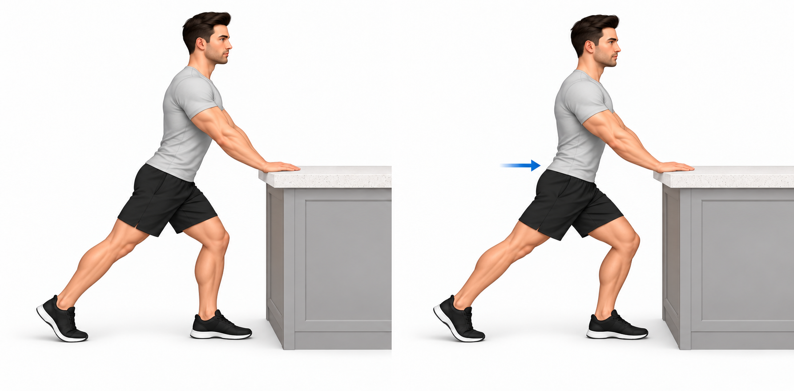
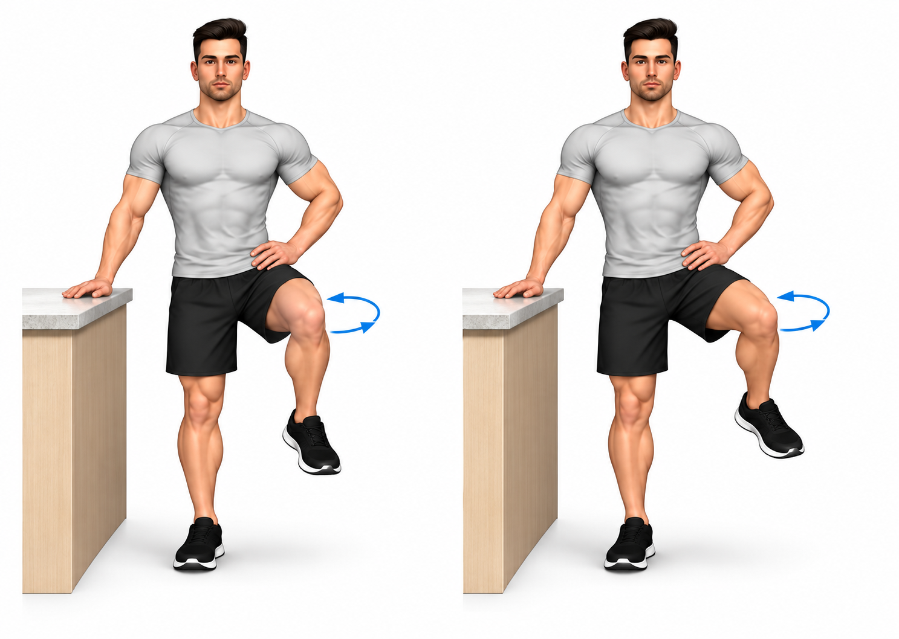
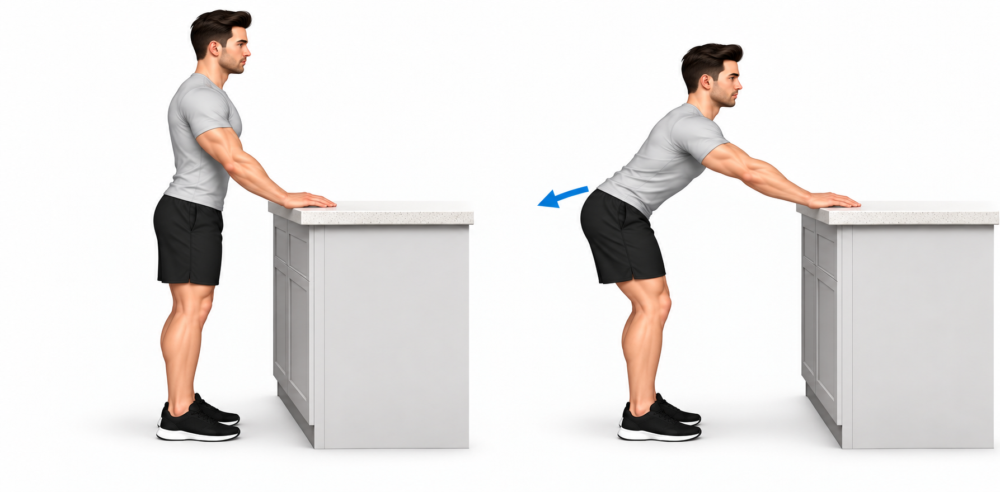

Pré-visualização das seis opções complementares. Apenas a seleção individual será prescrita.
Recomendações
Opções complementares
Este bloco complementa o seu plano. Faça apenas os exercícios selecionados para si; não é obrigatório realizar os seis nem somá-los a todos os exercícios de força.
Como começar
Comece com movimentos pequenos e lentos, sem forçar. A sugestão inicial é uma série de cinco repetições, conforme a dose prescrita. A equipa pode ajustar o lado e a frequência. Nos círculos, faça cinco em cada sentido se essa for a indicação.
Como evoluir
Se tolerar bem várias sessões, pode aumentar gradualmente até oito a dez repetições, conforme o plano. Altere uma coisa de cada vez. Ir ao chão ou retirar o apoio não são objetivos obrigatórios.
Quando reduzir ou parar
Pare esse movimento se surgir pontada na virilha, dor crescente, bloqueio ou perda de equilíbrio. Se piorarem a marcha, o sono ou a manhã seguinte, reduza a dose e peça ajuste do plano.
Apoios e adaptações
Use cadeira, bancada e degrau estáveis. A variante depende do que consegue fazer com conforto e controlo. Após cirurgia da anca, siga as restrições específicas e confirme este plano com a equipa.
Quando pedir ajuda
Procure avaliação urgente se tiver dor súbita e forte com dificuldade em apoiar a perna, sobretudo após queda, ou febre com dor importante. Contacte a equipa perante agravamento persistente ou perda rápida de movimento.

Figura 4 na cadeira — mobilidade dinâmica
Sugestão inicial: 1 × 5 movimentos lentos no lado selecionado. Repouso: 30 s conforme necessário.
Posição inicial
- Sente-se numa cadeira firme e suficientemente alta. Apoie um pé no chão e coloque o tornozelo oposto sobre a coxa, acima do joelho, apenas se o conseguir fazer sem forçar.
Execução
- Mantenha o joelho da perna cruzada numa posição confortável, sem o empurrar.
- Incline ligeiramente o tronco à frente a partir da anca, com as costas direitas, e volte à posição inicial. Um avanço e regresso contam como uma repetição.
Cuidados e adaptação
- Se não conseguir colocar o tornozelo sem dor, não faça esta variante; peça uma alternativa.
- Não comprima o joelho nem procure chegar com o peito à perna. Pare perante pontada na virilha.
- Adaptação e progressão: Comece com uma inclinação muito pequena. Aumente-a apenas se confortável, mantendo o apoio e sem empurrar o joelho.

Transição em passada — frente e parte posterior da coxa
Sugestão inicial: 1 × 5 movimentos lentos no lado selecionado. Repouso: 30 s conforme necessário.
Posição inicial
- De pé, com as duas mãos numa bancada firme, coloque um pé à frente e outro atrás, mantendo distância lateral entre eles.
Execução
- Avance suavemente a bacia, dobrando o joelho da frente, sem arquear as costas. O calcanhar de trás pode levantar ligeiramente.
- Recue a bacia, estenda parcialmente o joelho da frente e mantenha esse calcanhar apoiado, levantando ligeiramente os dedos se confortável. Regresse ao avanço. O ciclo completo conta como uma repetição.
Cuidados e adaptação
- Use uma passada curta e movimente-se devagar, sem balanços.
- Não force o joelho a esticar nem procure uma sensação de alongamento intensa.
- Adaptação e progressão: Aumente primeiro o controlo e depois, se tolerado, um pouco a amplitude. Mantenha as mãos apoiadas.

Abertura da anca com pé num degrau baixo
Sugestão inicial: 1 × 5 movimentos lentos no lado selecionado. Repouso: 30 s conforme necessário.
Posição inicial
- De pé junto de uma bancada firme, apoie uma mão e coloque o pé oposto num degrau baixo e estável, inicialmente cerca de 10–15 cm.
Execução
- Com o tronco direito, abra ligeiramente o joelho da perna elevada para fora, num movimento pequeno da anca.
- Deixe o pé acompanhar suavemente a orientação do joelho, sem o prender ao degrau. Regresse ao centro. Abertura e regresso contam como uma repetição.
Cuidados e adaptação
- Não empurre o joelho com a mão nem torça o joelho sobre um pé fixo.
- Mantenha o outro pé no chão e a bacia estável. Não suba para o degrau durante este exercício.
- Adaptação e progressão: Use menor altura ou menor abertura se necessário. Aumente apenas a abertura confortável, mantendo apoio e controlo.

Passada curta com apoio na bancada — mobilidade da anca
Sugestão inicial: 1 × 5 movimentos lentos no lado selecionado. Repouso: 30 s conforme necessário.
Posição inicial
- De pé diante de uma bancada firme, apoie as duas mãos. Coloque um pé à frente e outro atrás, sem alinhar os pés numa linha estreita.
Execução
- Mantenha o pé da frente apoiado e avance ligeiramente a bacia, dobrando o joelho da frente. O calcanhar de trás pode ficar levantado.
- Conserve o peito elevado e regresse à posição inicial. O avanço e regresso contam como uma repetição; não há rotação do tronco.
Cuidados e adaptação
- Use um avanço pequeno, sem afundar a bacia nem arquear a região lombar.
- Ao contrário da transição frente/trás, o objetivo aqui é um avanço controlado, sem procurar alongar a parte posterior da coxa. Pode escolher apenas um destes dois exercícios.
- Adaptação e progressão: Aumente ligeiramente o avanço se tolerado. Mantenha o apoio alto; não desça as mãos para o chão por iniciativa própria.

Círculos pequenos da anca em pé com apoio
Sugestão inicial: 1 × 5 movimentos lentos no lado selecionado. Repouso: 30 s conforme necessário. Nos círculos: cinco em cada sentido.
Posição inicial
- De pé junto de uma bancada firme, apoie uma mão. Dobre ligeiramente a perna mais afastada da bancada e levante o pé apenas o necessário para o libertar do chão.
Execução
- Desenhe pequenos círculos com o joelho, com movimento lento da anca e sem rodar o tronco.
- Complete os círculos no sentido prescrito e depois inverta. Cada círculo conta como uma repetição. Pouse o pé para descansar quando necessário.
Cuidados e adaptação
- Mantenha a bacia nivelada. Não é necessário elevar o joelho à altura da anca.
- Se perder equilíbrio ou inclinar o tronco, faça círculos menores ou pare e peça adaptação.
- Adaptação e progressão: Comece com círculos muito pequenos e apoio firme. Aumente apenas a amplitude confortável, sem retirar o apoio para dificultar.

Recuo da bacia com mãos na bancada
Sugestão inicial: 1 × 5 movimentos lentos no lado selecionado. Repouso: 30 s conforme necessário.
Posição inicial
- De pé diante de uma bancada firme, apoie as duas mãos. Mantenha os pés paralelos numa largura confortável e os joelhos ligeiramente dobrados.
Execução
- Leve devagar a bacia para trás, dobrando na anca e mantendo as costas numa posição confortável, sem as arredondar de propósito.
- Regresse à posição inicial. Um recuo e regresso contam como uma repetição. Mantenha as mãos apoiadas e os pés no chão.
Cuidados e adaptação
- Não é um agachamento profundo. Não force o peito para baixo nem procure a amplitude da imagem.
- Ajuste a distância à bancada para manter o apoio e não provocar dor na anca ou nos ombros.
- Adaptação e progressão: Comece com um recuo curto. Aumente-o apenas se confortável; mantenha a altura e o apoio que permitem controlo.
Revisão: 29/10/2026. Esta pré-visualização não é uma prescrição individual.